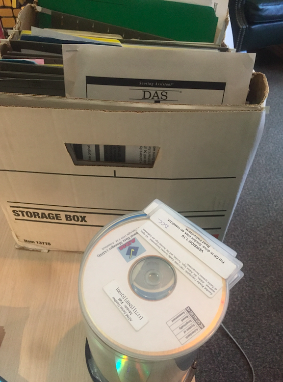

WHAT IS LORIS?

“LORIS is a modular and extensible web-based data management system that integrates all aspects of a multi-center study: from heterogeneous data acquisition (imaging, clinical, behavior, genetics) to storage, processing and ultimately dissemination.” |

|
What does LORIS do?

What does LORIS do?

|  |
Pre-LORIS:
|

|

|
|


|

|
|
IBIS - Banff mountaintop


Login

Dashboard

Imaging Quality Control

Data Querying Tool

Data Dictionary Builder

Mobile - Responsive layout

Other important LORIS modules
|
|


Other LORIS improvements
- PHP Standard Recommendations (PSR)
- SQL schema improvements
- REACT-ification
- Data Framework - for extensible modularization
- CSS improvements - Bootstrap for mobile rendereing
- Integration testing
- Some unit testing
- Git - Github - Travis
- Javascript enhancements for browser-side processing
- Installation script and Configuration module
- Built-in defacing and SnR checks
Security enhancements
- Secure file upload and download
- Login rate limiting and account lockout
- Secured against CSRF attacks
- Patched several OS command injection vulnerabilities
- Overhaul of passwords so they're NIST compliant
- Mitigated many cross-site scripting vectors
- Implemented cryptographic randomness for random tokens
- Javascript enhancements for browser-side processing
- Installation script and Configuration module
- Virtualization


C-BIG-R is now live


Courtesy of Henri Rabalais
Why use LORIS?

Why use LORIS?
- Project and Data Management!
- Long Term Storage - Large datasets are valuable assets (e.g.ADNI)
- Anonymity/Privacy - Ethics/IRB compliance and patient confidentiality
- Data Sharing- Cross project collaborations
- Secure Web Access- Available through a web browser
- Heterogeneous Data Management - Single platform for MRI, PET, Clinical & Genetics data
- Multimodal Data Querying - Easy querying of data, without requiring a programmer
- Quality Control - Protocol violations, artefact detector, inter-rater reliability
- Summary Statistics - Demographics, imaging, data entry
- Processing Platform - Seamless serving of data to processing environments
- Radiological Reviews - Visualization, including module to curate
- Import/Export Capabilities - .xls, .csv, etc.
- Biobanking - Tissue, blood and saliva samples
- Visualization - 3D and 4D
- Customizable & Extensible - New modules and features are possible
- Open Source - Full access to source code. Code is free.
Who should use LORIS?
"You don't understand... LORIS saved our lives ... We could share our data anywhere. LORIS makes it really hard to share incorrect data. The quality control data is right there. You can share the QC... it's so well QCed" -- Angelina Paolozza (NeuroDevenet, 2015)
LORIS - Github - Open Source
https://github.com/aces/Loris


|
Thank you!Acknowledgements: Alan Evans, Alex Zijdenbos, Dario Vins, Jonathan Harlap, Matt Charlet, Andrew Corderey, Sebastian Muehlboeck, Reza Adalat, Louis Collins, Vladimir Fonov, Marc Rousseau, Mia Petkova, Rathi Gnanasekaran, David Brownlee, Tarek Sherif, Pierre Rioux, Nic Kassis, Leigh MacIntyre, Claude Lepage, Ilana Leppert, Natasha Beck, Tristan Glatard, Bert Vincent, Lindsay Lewis, Najma Mahani, Elodie Portales-Casamar, Alden Woodward, Sylvain Milot, Jean Francois Malouin, Sylvain Baillet, Daniel Kroetz, Martin Weiss, Mathieu Desrosier, Jason Karamchandani, Amit Bar-Or, Ted Fon, John Brietner, Derek Lo, Patrick Bermudez, Chris Steele, Pamela Patterson and one of my favourites: Pierre Bellec! LORIS team on left |